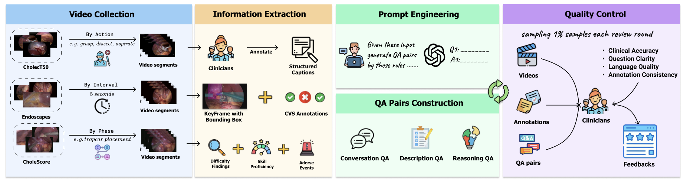
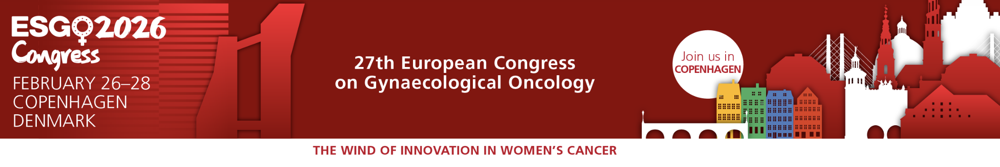
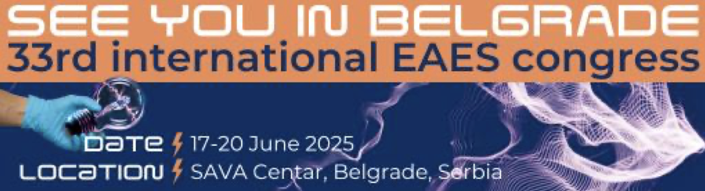
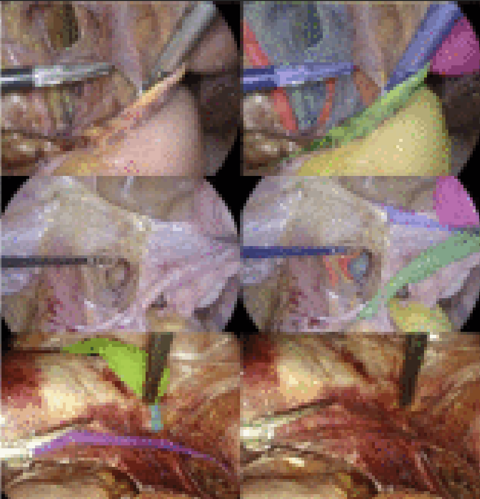

Medical student and AI researcher working at the intersection of clinical decision-making, surgical intelligence, and multimodal machine learning.
My work focuses on building AI systems capable of understanding complex medical environments — from surgical videos to clinical reasoning — with the goal of enhancing safety, precision, and real-time decision support in healthcare.
I am a medical student at the University of Strasbourg with a strong focus on the intersection between clinical medicine and artificial intelligence. My work lies at the boundary between patient care, surgical practice, and advanced deep learning systems, particularly in the field of multimodal AI for healthcare.
My training follows a highly selective dual-degree Medicine–Science track, combining rigorous medical education with parallel scientific training in biology, data science, and biomedical engineering. This includes hands-on laboratory work, research internships, and early exposure to graduate-level studies in HealthTech and medical imaging AI.
I am particularly interested in developing AI systems that can assist clinicians in real-time decision-making, with a focus on surgical intelligence, vision-language models, and multimodal reasoning applied to complex intraoperative environments.
My long-term goal is to contribute to the development of clinically grounded AI systems that improve surgical safety, enhance procedural understanding, and bridge the gap between computational models and real-world medical practice.
Medicine-Science Strasbourg Program · 3-year integrated curriculum combining medical training and fundamental sciences.
Parallel scientific training alongside medical studies: DNA replication lab work, experimental research internship (2 months), and structured research immersion.
Advanced academic pathway: Master 1 IRIV / IMed ( Télécom Physique Strasbourg ) and early entry into Master 2 HealthTech ( University of Strasbourg ).
Faculty of Medicine of Strasbourg
Completed DFGSM. Transitioning to DFASM in September 2026 following a dedicated research year in HealthTech (M2).
HealthTech Master Research Project
Development of SurgiLingo VQA: a clinically grounded multimodal dataset for surgical question answering in colorectal surgery and total hysterectomy.
Objective: build AI systems capable of procedural understanding and surgical decision support using vision-language models.
CAMMA Lab — University of Strasbourg
Collaborative research with engineers and clinicians on computer-assisted surgery.
Active projects: cholecystectomy (adverse event prediction, segmentation, triplet detection, CVS evaluation), rectal resection (anastomotic leakage prediction), and gynecologic surgery annotation protocols.
2025 — 2026 · University of Strasbourg · Télécom Physique Strasbourg
2024 — 2025 · University of Strasbourg · Télécom Physique Strasbourg
2023 — 2024 · Faculty of Medicine · University of Strasbourg
2022 — 2023 · Faculty of Health Sciences & Psychology · University of Strasbourg
September 2025 — August 2026 · University of Strasbourg
August 2024 — June 2025 · Surgical AI Research
27 June 2025 · European Association for Endoscopic Surgery
July — August 2025 · Medical AI / Surgical Vision
June — August 2024 · Surgical AI Foundations

Co-author · Surgical AI / Computer Vision
SurgTEMP: Temporal-Aware Surgical Video Question Answering with Text-guided Visual Memory for Laparoscopic Cholecystectomy.

Co-author · Submitted to ESGO 2026 (37th European Congress of Gynaecological Oncology)

33rd International Congress of the European Association for Endoscopic Surgery
Tuesday, 17 June 2025
Title: Surgeon-centric design of CVS Copilot, an AI-powered system for real-time assistance during laparoscopic cholecystectomy.
Nicolas Chanel · L. Arboit · P. Mascagni · N. Padoy
Congress ProgramShi Li · V. Srivastav · N. Chanel · S. Sharma · N. Banik · L. Arboit · K. Yuan · P. Mascagni · N. Padoy
2026 · arXiv Preprint
Read Paper
V. Iacobelli · F. M. Tesfai · B. Baby · L. Arboit · M. Pavone · A. Rosati · N. Bizzarri · A. Baroni · C. Innocenzi · N. Chanel · D. Chandrasekaran · D. Querleu · L. Lecointre · P. Mascagni · N. Padoy · N. Francis · A. Fagotti
2026 · International Journal of Gynecological Cancer
Read PaperMedical Student • AI Researcher